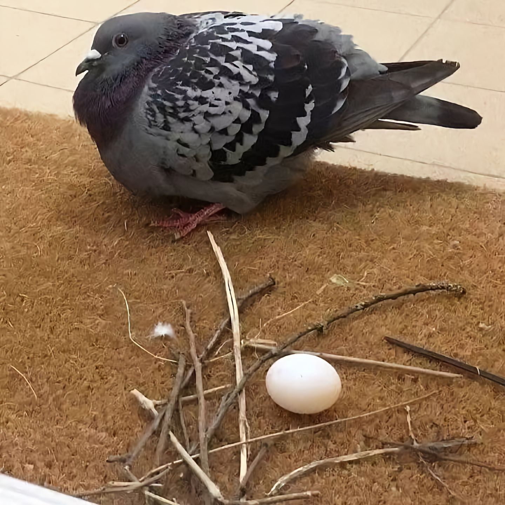
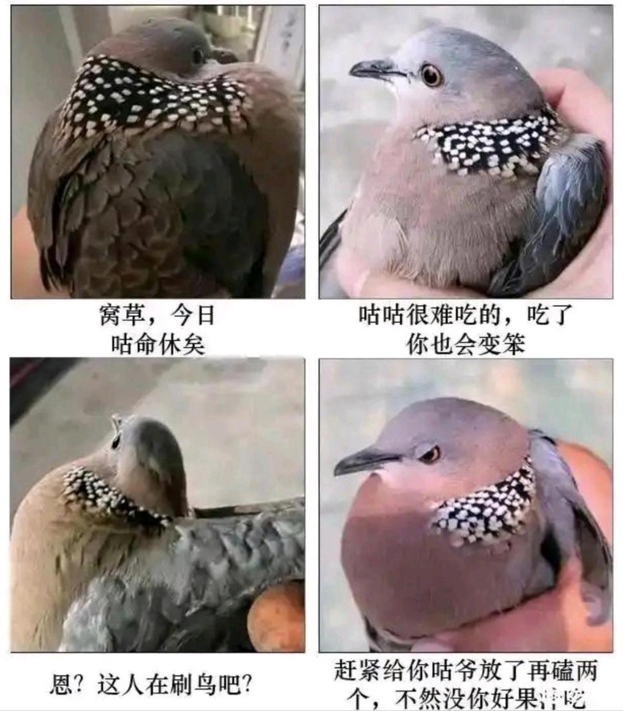
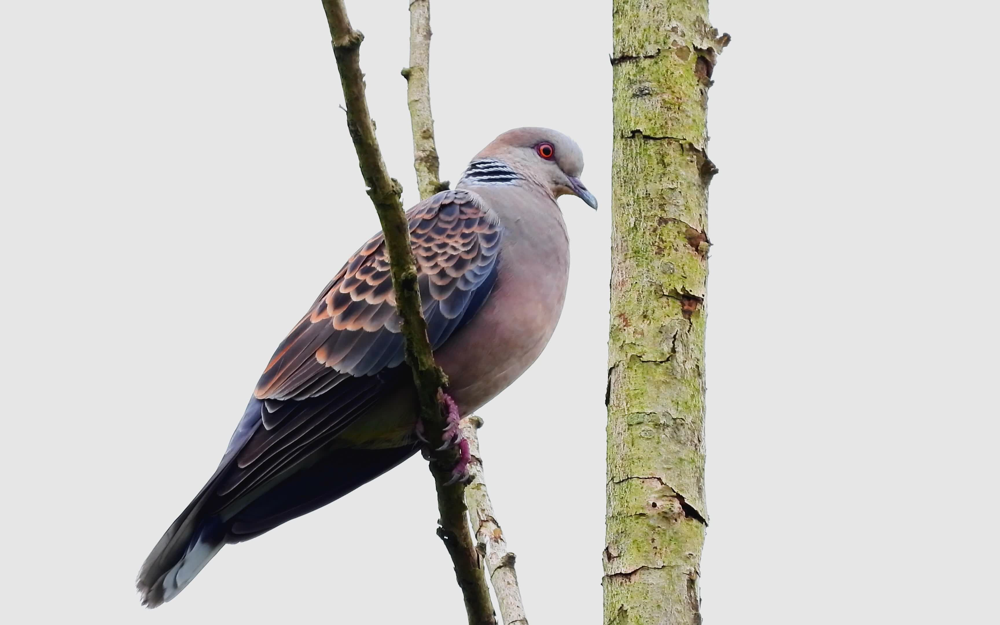
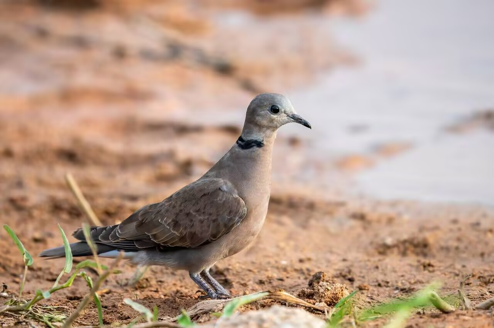
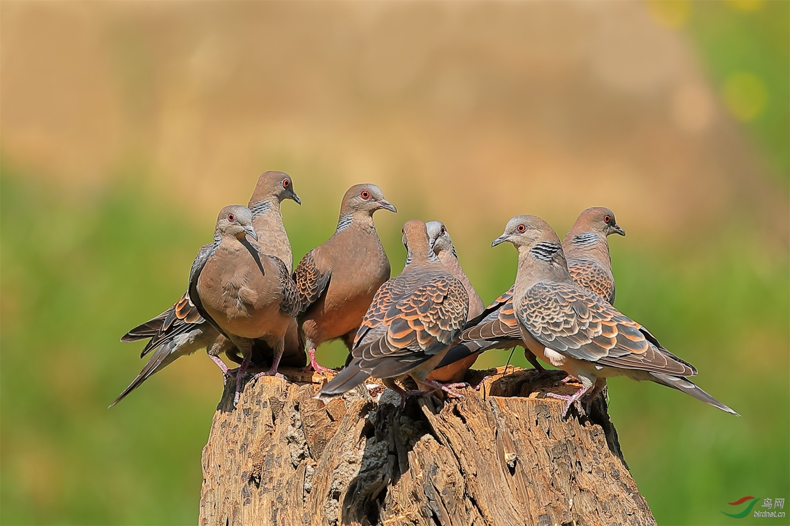

羽翼守望者



珠颈斑鸠是中国城市最普遍的斑鸠，体长约28-32cm，上体灰褐色，颈侧具黑白色珍珠状斑块，尾羽外侧白色。广泛分布于中国南方，北方也有分布。
以谷物、草籽为食，常在地面行走觅食。繁殖期3-8月，营巢于树枝上，每窝产2枚卵。种群数量稳定，适应性强。
在观鸟圈中，珠颈斑鸠因其独特的傻乎乎性格和对生活得过且过的态度，以及大难临头时的沉稳(其实是太傻了不知道有危险)，常被鸟类爱好者称为“傻咕咕”。

山斑鸠体长约30-34cm，上体褐色带黑色鳞状斑，颈侧具黑斑。分布于欧亚大陆，在中国为常见留鸟或夏候鸟。
栖息于林缘和农田，也进入城市公园。以谷物、种子为食。繁殖期4-7月，每窝产2枚卵。

火斑鸠体长约20-23cm，雄鸟头颈灰蓝色，上体葡萄红色，颈侧具黑斑。分布于亚洲南部，中国南方为夏候鸟。
📖 参考：点此处 查看 IUCN 评估。

斑鸠属在城市生态中扮演种子传播角色，保护绿地、减少捕猎对它们至关重要。
📖 了解更多：点此处 查看中国林草局。